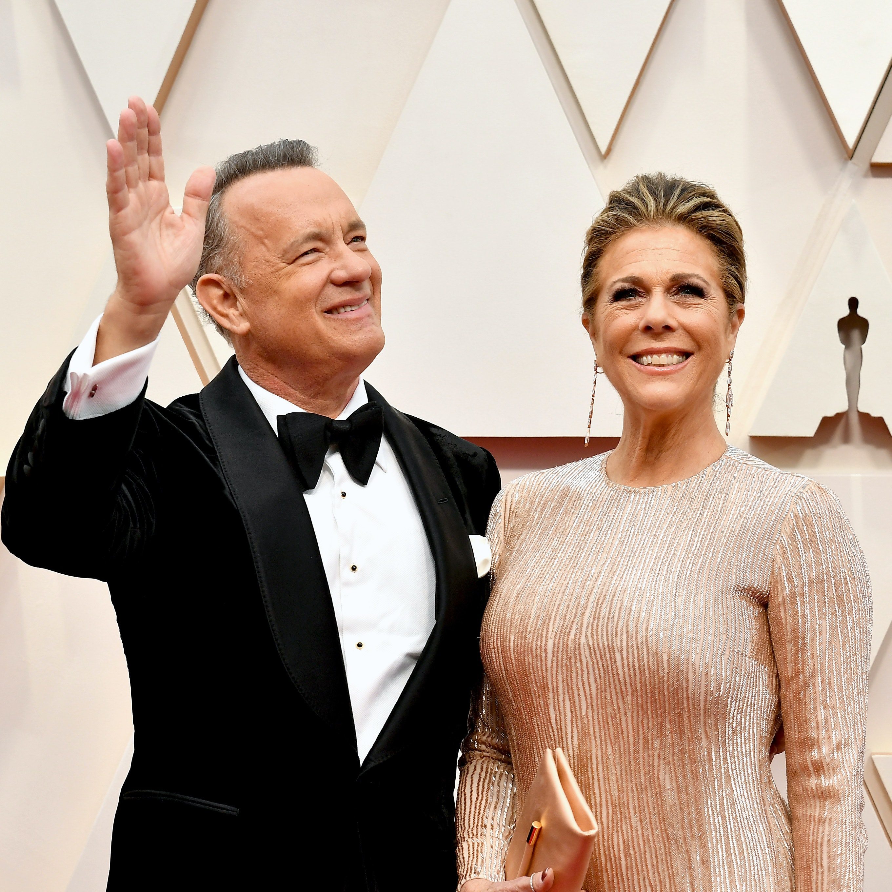

Daniel Radcliffe Shut Down Rumors He Has Coronavirus In The Most Lighthearted Way

The Coronavirus pandemic is no laughing matter, but Daniel Radcliffe still managed to inject some tasteful humor into the situation on March 11 while addressing rumors he had contracted the virus.After a fake tweet from BBC circulated claiming the
Harry Potter star had fallen sick, Radcliffe figured it was time for some comic relief.Daniel Radcliffe's response to false rumors he has Coronavirus was so on brand for him.
Radcliffe addressed the rumor when speaking with Australian radio show
Smallzy's Surgery. Despite what the Twittersphere was saying, he promised he was healthy as a clam.
'I walked into the hair and makeup room on a play yesterday, and the makeup artist was like, 'My niece has just texted me and told me you've got corona,'' Radcliffe recalled.'I think it was on a fake BBC account, but then enough people saw it.That is the internet, but, you know, flattered they chose me.'
He then cracked a joke about why he thought it was completely understandable the internet would believe the hoax.
'I think it's just because I look ill all the time, so you can believably say it about me.'Cause I'm very pale,' he said.You can hear his comments from the radio show below.
Thankfully, Radcliffe's case was just a rumor.Sadly, that's not the case for other celebrities.The same day, it was confirmed Tom Hanks and his wife Rita Wilson do have the virus.
Hanks shared details about their current health status on Instagram.
'Hello, folks.Rita and I are down here in Australia.We felt a bit tired, like we had colds, and some body aches,' Hanks wrote in a post on Instagram.'Rita had some chills that came and went.Slight fevers too.To play things right, as is needed in the world right now, we were tested for the Coronavirus, and were found to be positive.'
He also promised to 'keep the world posted and updated.'
Hanks is keeping things positive despite his diagnosis, but the world will definitely be sending him and Wilson all the good vibes in hopes they both get better soon.
If you think you’re showing symptoms of coronavirus , which include fever, shortness of breath, and cough, call your doctor before going to get tested.If you’re anxious about the virus’s spread in your community, visit the CDC for up-to-date information and resources , or seek out mental health support.You can find all Elite Daily's coverage of coronavirus here.
Posted On: 2020-03-12T00:00:00
Posted By: Brandy Robidoux
Content Date: 2020-03-12
Download Date: 2021-05-30
Document ID: L0C04CPQW